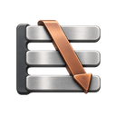
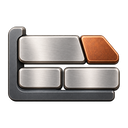
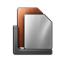
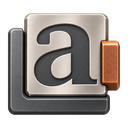
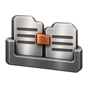
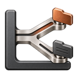
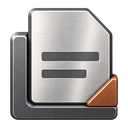

Ferroni
A regex engine
Oniguruma regular expressions and a multi-pattern scanner in Rust.
 Ferramenta
Ferramenta
A family of Rust engines.
Focused tools for text, code and documents. Choose the engine your work needs, with a shared standard of care and a contract of its own.

Each engine has its own scope, documentation and repository. Start with the task in front of you.

A regex engine
Oniguruma regular expressions and a multi-pattern scanner in Rust.

A syntax highlighter
Highlight code with the grammars and themes your editor uses.

A Markdown renderer
Turn Markdown into HTML, with CommonMark and GFM as the reference.

A spell checker
Check prose and code with Hunspell dictionaries and deterministic suggestions.

A translation catalog engine
Read, merge and compile translation catalogs.

A glob matcher and file walker
Match glob patterns and walk file trees in parallel.

A PDF preview renderer
Render PDF previews under explicit resource limits.
The engines work with established formats and contracts. Compatibility evidence belongs with each project, where its scope and limitations can be read in full.
| Engine | Familiar foundation | Evidence to look for |
|---|---|---|
| Ferroni | Oniguruma regular expressions | Compatibility oracle |
| Ferriki | TextMate grammars and editor themes | Mirrored Shiki tests |
| Ferromark | CommonMark and GFM | Conformance cases |
| Ferrolex | Hunspell dictionaries | Deterministic suggestion scoring |
| Ferrocat | PO and ICU MessageFormat | Upstream-derived conformance cases |
| Ferralk | Glob syntax and .gitignore rules | Frozen zlob reference |
| Ferrugo | Explicit memory and time limits |
Read each project's evidence and limits before adopting it.
The family is a way to find related work, not a required stack. Each engine keeps a focused purpose. Where two fit together, their documentation explains the relationship.
Ferriki uses Ferroni for pattern matching and pairs with Ferromark for highlighted documents. Ferromark does not require Ferriki.
Read the reference tests, compatibility notes and measurements in each repository. That is where the conditions stay attached to the claim and where limitations can be checked against your workload.
Use the engine's own documentation to understand the interfaces and boundaries that matter to your application.
Built by Sebastian Software in Mainz, Germany.